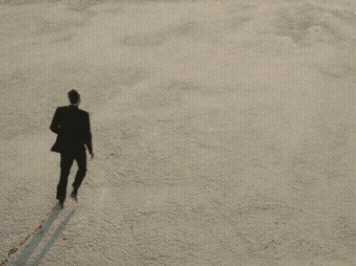

In the morning,
the dew lay round about the host,
and when [it] was gone up, behold.
Upon the face of the wilderness there lay a small round thing,
as small as the hoarfrost on the ground.
And when the children of Israel saw it, ...
they wist not what it was. And Moses said unto them.
This is the bread which the Lord hath given to you to eat.
Gather of it every man according to his eating. ...
And the children of Israel did so,
and gathered,
some more,
some less.
And when they did mete it with an omer,
he that gathered much had nothing over,
and he that gathered little had no lack;
they gathered every man according to his eating....
But some of them left it until the morning,
and it bred worms and stank....